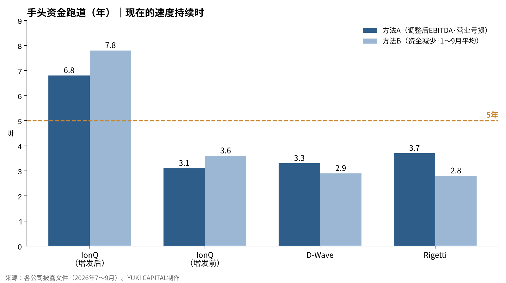
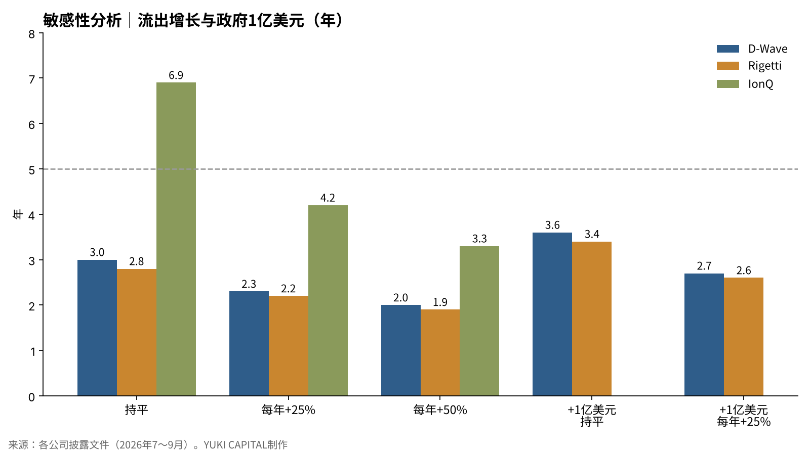

三家量子计算公司的手头资金，按现在的亏损速度能撑几年？——用IonQ、D-Wave、Rigetti的7～9月财报测算
三家上市量子计算公司在11月上旬公布了7～9月财报。IonQ的收入超过去年同期的4倍，而D-Wave和Rigetti的季度收入仍只有几百万美元[1][2][5]。
三家公司的主营业务都还没有产生现金。看亏损公司时，最先要确认的不是何时盈利，而是手头的现金能撑几年。
本文的问题是：如果现在的亏损速度持续，三家公司的手头资金能撑几年？
- 按现在的速度，D-Wave和Rigetti的手头资金约够2.8～3.7年，达不到5年。
- IonQ计入10月约20亿美元的增发后约有36.5亿美元，够6.8～7.8年；只看增发前的余额，则为3.1～3.6年。
- 如果亏损每年增加25%，D-Wave和Rigetti会缩短到2.2～2.3年。美国商务部最多1亿美元的支持，每家只增加约0.6年。

问题与背景
量子计算机是用量子比特（可以处于0和1叠加状态的信息单位）进行计算的机器。三家公司的技术路线不同：IonQ采用用电场捕获离子的离子阱方式，Rigetti采用超导电路方式。D-Wave以解决优化问题的量子退火为主力，同时也在开发超导门模型。
本文所说的"跑道（runway）"，是指手头现金、存款和有价证券的合计，除以每年资金流出额得到的年数，大致表示公司不再融资也能继续经营的期限。
这个问题现在重要，是因为量子需求开始以期限的形式出现。美国国家标准与技术研究院（NIST）10月27日发布了迁移计划的最终版：可能被量子计算机破解的加密（RSA和椭圆曲线密码）在2030年后不再推荐，2035年后不再允许使用[6]。谷歌研究员克雷格·吉德尼在2025年的论文中估算，用不到100万个有噪声的量子比特，不到一周就能破解RSA-2048[7]。防守方的准备和攻击方的技术，都开始有了年份。
但如果需求成长之前公司的现金就用完了，股东可能拿不到成果。通过发行新股融资，每股的权益会被稀释。因此，有必要把需求的期限和公司现金的期限放在一起，用数字来看。
数据与方法
所用数字来自各公司向美国证券交易委员会（SEC）提交的披露文件和财报公告[1][2][3][4][5]。手头资金为现金加上短期和长期投资（有价证券）。Rigetti没有借款，本文对D-Wave和IonQ也没有扣除负债。
资金流出用两种方法计算。方法A：把季度调整后EBITDA亏损乘以4换算为全年。调整后EBITDA是指扣除利息、税、折旧、股权激励等之后的主营业务损益。方法B：把较上季度末减少的手头资金乘以4。方法B包含资本支出，但也混入了预收款等。
IonQ在10月完成增发，7～9月还完成了对半导体代工企业SkyWater的收购，因此余额差额无法使用。方法B改用1～9月调整后EBITDA亏损3.506亿美元换算为全年[1]。Rigetti不公布调整后EBITDA，方法A使用营业亏损。营业亏损中包含不涉及现金的股权激励，会偏向高估流出。
公式为：跑道（年）＝手头资金÷每年流出额。
| 公司 | 手头资金（9月末） | 季度流出 | 全年流出 | 跑道 |
|---|---|---|---|---|
| IonQ（增发后） | 约36.5亿美元 | A 1.336亿美元／B 1～9月平均 | 5.34亿／4.68亿美元 | 6.8年／7.8年 |
| IonQ（增发前） | 16.6亿美元 | 同上 | 5.34亿／4.68亿美元 | 3.1年／3.6年 |
| D-Wave | 5.034亿美元 | A 0.377亿美元／B 0.428亿美元 | 1.51亿／1.71亿美元 | 3.3年／2.9年 |
| Rigetti | 4.971亿美元 | A 0.332亿美元（营业亏损）／B 0.442亿美元 | 1.33亿／1.77亿美元 | 3.7年／2.8年 |
结果
按现在的速度，D-Wave的手头资金够2.9～3.3年，Rigetti够2.8～3.7年。D-Wave的手头资金从6月末的5.462亿美元降到9月末的5.034亿美元，3个月减少4,280万美元[2][3]。Rigetti从5.413亿美元降到4.971亿美元，减少4,420万美元[4][5]。两家每季度都以4,000多万美元的速度流出现金。
IonQ只看9月末余额为16.6亿美元，按方法A够3.1年。加上10月16日完成的约20亿美元增发，约为36.5亿美元，跑道延长到6.8～7.8年[1]。IonQ第三季度收入1.738亿美元，其中8,350万美元来自收购的SkyWater代工业务[1]。


把三家放在一起看，手头资金的规模相近，但决定能撑几年的是流出的速度。D-Wave和Rigetti手头都约5亿美元，规模相同，但两种方法的差距很大。资本支出和营运资金的变动，让每季度现金的减少幅度出现波动。
敏感性分析
改变"现在的速度持续"这一前提：亏损每年持平、每年增加25%、每年增加50%三种情况，再叠加获得美国商务部最多1亿美元资金的情况。D-Wave和Rigetti的流出采用较保守的方法B。
| 公司 | 流出持平 | 每年+25% | 每年+50% | +1亿美元（持平） | +1亿美元（每年+25%） |
|---|---|---|---|---|---|
| IonQ（增发后） | 6.9年 | 4.2年 | 3.3年 | — | — |
| IonQ（增发前） | 3.2年 | 2.4年 | 2.1年 | — | — |
| D-Wave | 3.0年 | 2.3年 | 2.0年 | 3.6年 | 2.7年 |
| Rigetti | 2.8年 | 2.2年 | 1.9年 | 3.4年 | 2.6年 |

流出每年只增加25%，D-Wave和Rigetti的跑道就会缩短到2年出头。商务部的资金是Rigetti在9月正式签署的最多1亿美元研发支持，D-Wave也签了同等规模的协议[2][8]。两者都由政府获得少数股东权益，即使手头资金增加1亿美元，跑道也只延长约0.6年。
讨论
反对的观点有两个。第一，收入增长会减少流出。D-Wave表示10～12月设备集中出货，全年收入大部分将计入这一季度[3]。Rigetti也预计在10～12月确认来自印度研究机构C-DAC的108量子比特设备收入840万美元[4]。但与每季度4,000多万美元的流出相比，规模都很小，不足以把跑道延长以年计。
第二，股价高的时候，随时可以通过增发融资。IonQ的20亿美元增发就是实例。按这一观点，跑道不应理解为公司的寿命，而是股东权益不被稀释的期限。本文的数字也以这种方式理解最为准确。
本文也有局限。所用数据只有一个季度，方法A不含资本支出。Rigetti的营业亏损包含非现金费用，方法B混入了预收款。IonQ有了代工这一不同业务，无法单独看量子业务的流出。
可以设三个检验标准：10～12月季度末，D-Wave的手头资金是否低于4.6亿美元，Rigetti是否低于4.5亿美元；IonQ的季度调整后EBITDA亏损是否超过1.5亿美元；以及商务部的资金实际何时、到账多少。
结论
如果现在的亏损速度持续，D-Wave和Rigetti的手头资金大约只够3年左右，达不到5年。IonQ计入增发约有7年，但增发前只有3年多。流出每年增加25%，两家会缩短到2年出头，即使政府的1亿美元到位，也只延长约0.6年。没有增发或收入增长，三家公司的手头资金撑不到量子需求开始以年份标记的2030年前后。
我的看法
我住在日本，持有IonQ 2,500股、D-Wave和Rigetti各1,500股。三家都在亏损，我知道很多人担心增发。关于手头资金，我一直认为能撑5年就够了。这次的计算显示，按现在的速度，D-Wave和Rigetti大约是3年。与5年之间相差的2年，将由收入增长、政府资金或新的增发来填补。
即便如此，我认为量子的必要性提高得比想象中更快。政府相关订单在增加，今年10月和11月接连出现网络安全问题。我认为AI之后就是量子。看了7～9月的财报，我也没有什么特别的感觉。
来源
- IonQ, Inc., 「Form 8-K Exhibit 99.1: Third Quarter 2026 Financial Results」, 2026-11-05 https://www.sec.gov/Archives/edgar/data/0001824920/000119312526449779/ionq-ex99_1.htm
- D-Wave Quantum Inc., 「Form 8-K Exhibit 99.1: Third Quarter 2026 Results」, 2026-11-11 https://www.sec.gov/Archives/edgar/data/0001907982/000190798226000180/qbts-20261110xexx991.htm
- D-Wave Quantum Inc., 「Form 8-K Exhibit 99.1: Second Quarter 2026 Results」, 2026-08-06 https://www.sec.gov/Archives/edgar/data/0001907982/000190798226000127/qbts-20260806xexx991.htm
- Rigetti Computing, Inc., 「Rigetti Computing Reports Second Quarter 2026 Financial Results」, 2026-08-06 https://finviz.com/news/379037/rigetti-computing-reports-second-quarter-2026-financial-results
- Rigetti Computing, Inc., 「Third Quarter 2026 Financial Results（Investor Relations）」, 2026-11-11 https://investors.rigetti.com/
- National Institute of Standards and Technology, 「NIST IR 8547: Transition to Post-Quantum Cryptography Standards（Final）」, 2026-10-27 https://csrc.nist.gov/pubs/ir/8547/final
- Craig Gidney, 「How to factor 2048 bit RSA integers with less than a million noisy qubits（arXiv:2505.15917）」, 2025-05 https://arxiv.org/abs/2505.15917
- Nasdaq（Zacks）, 「Rigetti Secures $100 Million CHIPS Award to Advance Quantum Scaling」, 2026-09 https://www.nasdaq.com/articles/rigetti-secures-100-million-chips-award-advance-quantum-scaling
- Quantum Computing Report, 「IonQ Announces Record Q3 2026 Revenues of $173.8M」, 2026-11-07 https://quantumcomputingreport.com/ionq-announces-record-q3-2026-revenues-of-173-8m-and-raises-fy-2026-guidance-to-over-505m-as-backlog-reaches-1-2b/amp/
照片：Laura Ockel／Planet Volumes（Unsplash）。图表由YUKI CAPITAL制作
每天的数字和判断，我都记录在X上。